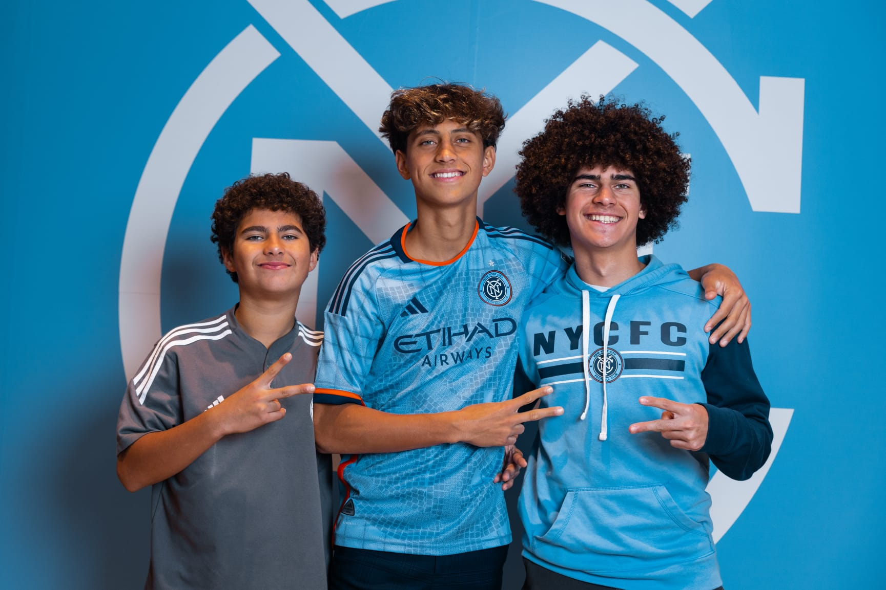
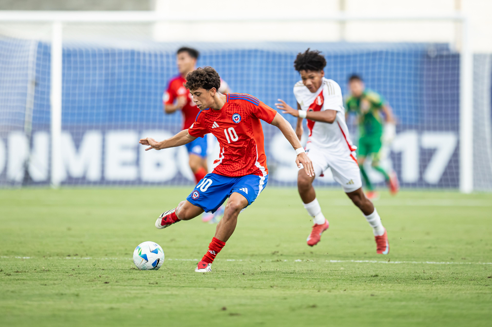
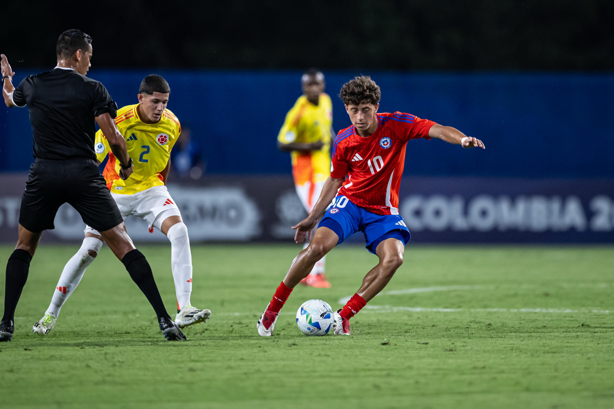

Develop the whole player.
Protect and develop football through training and innovation that foster healthy habits, social connection, equality, and meaningful participation—while building complete footballers and confident young people.
Vasco Da Lor player development
Football is our language. Development is our responsibility. We build complete footballers and confident young people through a pathway connected to the real game.

Private foundation → NYCFC Homegrown
From the first fields to the first team
The progression is visible: early youth football, academy development, international competition, and the NYCFC first-team milestone.




Explore the program
Follow the players, see how the pathway is structured, and watch private training connect to real match performance.

Zidane, Maya, Seth, and Samory—four views of long-term development.
Meet the players ↗
Watch full private sessions and official match footage on the page.
Enter the film room ↗
Tier 1 and Tier 2 lead the performance pathway.
Compare the tiers ↗Mission · Vision · Values
One Player. One Standard. One Difference. One player can raise the level of an entire environment.
Protect and develop football through training and innovation that foster healthy habits, social connection, equality, and meaningful participation—while building complete footballers and confident young people.
Create a standard for player development that values the person as much as the player and connects individual growth to the demands of the real game.
Every player deserves individual attention, honest coaching, and a pathway that supports development on and off the field—with a stronger foundation and a deeper love for football.

Director of training · Coach Roger Teixeira
“This is not training to get tired. This is training to get better.”
Our standards are non-negotiable. Stay with the basics, teach the player to understand, and build confidence through preparation—not shortcuts.
See the development method ↗New players begin with an application and a one-week trial so the coaches can understand the player, the family, and the right pathway.
Begin the process ↗